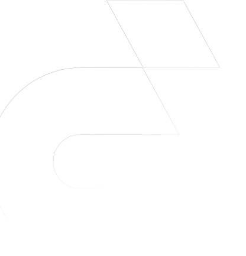
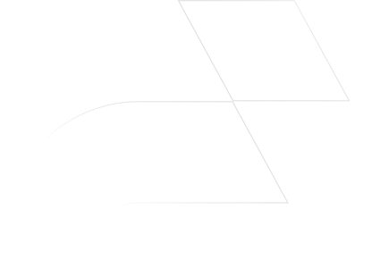

Всего для оценки мы используем около 40 показателей и привлекаем к работе профессиональных экономистов.


Если вы находитесь в специальном реестре Федеральной налоговой службы, для поднятия рейтинга необходимо предпринять все усилия, чтобы вас из этого реестра исключили, т. е. выполнить условия ФНС. Иначе рейтинг поднять не получится.
Добавляйте данные о компании на сервис. Чем их больше — тем лучше. Повышение экономических показателей, отражающихся в бухгалтерской отчетности, лицензии, участие в тендерах, отсутствие незакрытых исполнительных производств также повысит рейтинг вашей компании.
При анализе контрагента помните, что хороший рейтинг не является гарантией отсутствия рисков.
Только комплексная проверка дает полную картину надежности компании.